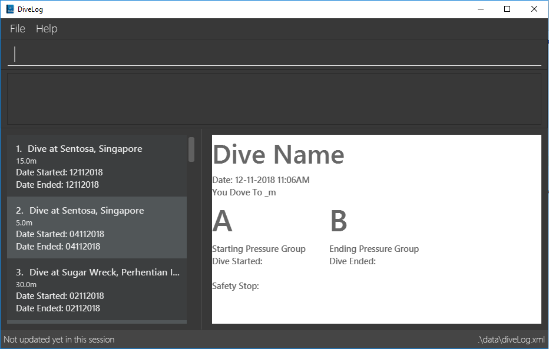

By: Team CS2113-AY1819S1-W13-2 Since: Aug 2018 Licence: MIT
- 1. Introduction
- 2. Quick Start
- 3. Features
- 3.1. Viewing help :
help - 3.2. Adding a dive session:
add - 3.3. Listing all dives :
list - 3.4. Editing a dive :
edit - 3.5. Setting display units
set_units - 3.6. Locating dives by location:
find - 3.7. Deleting a dive :
delete - 3.8. Selecting a diveSession :
select - 3.9. Listing entered commands :
history - 3.10. Undoing previous command :
undo - 3.11. Redoing the previously undone command :
redo - 3.12. Clearing all entries :
clear - 3.13. Getting the current pressure group status and safe flight recommendation information :
currentpg - 3.14. Setting parameters to sort dives :
sortby[coming in V2.0] - 3.15. Planning Mode :
newplanornormalmode - 3.16. Port files from Planning Mode to normal mode :
portover - 3.17. Exiting the program :
exit - 3.18. Saving the data
- 3.1. Viewing help :
- 4. About Pressure Groups and calculation in recreational diving
- 5. Dive Tables Definitions Review
- 6. FAQ
1. Introduction
Divelog is a digital dive log for planning and tracking recreational (no decompression) dives that aims to simplify safe dive planning, logging and calculations.
Divelog provides a simple way for underwater recreational divers to input details of their dives such as the time they spent at a particular depth, and Divelog will keep track of their nitrogen levels.
This allows divers to plan their next trip safely.
We have adopted the [PADI] dive tables standards to calculate pressure groups for individual recreational dives. In addition, we are also able to determine if the dive is the first dive or a repetitive dive. Do not attempt to use Divelog for planning decompression dives.
Pressure groups are made up of an alphabet, between A to Z, which marks the nitrogen concentration within a diver ("A" corresponds to a scenario where the diver is almost free of nitrogen, whilst "Z" corresponds to a scenario where the diver has dangerously excess of Nitrogen).
As of v1.4, the pressure groups are automatically calculated across all dives. You only need to enter the location, depth and the time of the the dive. Following which, the pressure groups of all dives are automatically calculated and updated.
The system will also verify that the dives are safe before allowing you to add and/or edit the dives. This is to ensure your safety.
We are still working on the sortby
[sortby] feature coming in the upcoming release v2.0.
For more information on pressure groups and the definitions of common diving terms used, you can find out more over at Section 4, “About Pressure Groups and calculation in recreational diving”, Section 5, “Dive Tables Definitions Review” and in Section 6, “FAQ”.
2. Quick Start
-
Ensure you have Java version
9or later installed in your Computer. Here’s how -
Download the latest
divelog.jarhere. -
Copy the file to the folder you want to use as the home folder for your Dive Log.
-
Double-click the divelog.jar file to start the app. The Graphical User Interface (GUI), as seen in Diagram 1 below, should appear in a few seconds.
Diagram 1: screenshot of GUI
-
Type the command in the command box (as seen in Diagram 2 below) and press Enter to execute it.
e.g. typinghelpand pressing Enter will open the help window.
Click to view screenshot for location of command box
3. Features
Command Format
Confused by our User Guide? Our guide is written following the below few guidelines.
-
Some commands have an alias, which you can also use to execute the command
-
e.g. to find out about your current pressure group status and safe flight recommendation information, you can type either
currentpgorcpg.
-
-
Words in
UPPER_CASEare the parameters to be supplied by you, the user.-
e.g. in
add l/LOCATION,LOCATIONis a parameter which can be used asadd l/Sentosa.
-
-
Items in square brackets are optional
-
e.g
l/LOCATION [tz/TIMEZONE]can be used asl/Bali tz/+8or asl/Bali.
-
-
Parameters can be entered in any order
-
e.g. if the command specifies
l/Sentosa, Singapore d/10,d/10 l/Sentosa, Singaporeis also acceptable.
-
-
A vertical bar
a|bmeans eitheraorbwill work as inputs.
3.1. Viewing help : help
Use this command to help window to see the user guide. Upon entering the command, a separate window with the user guide will open.
Format: help
Diagram 3: Enter the help command in the command box Diagram 4: The help guide will open up
Click here to view the screenshots to open help within the application
| You can close the guide by closing it. This can be done by clicking on the X on the top right corner. |
Diagram 5: Click the X to close
Click here to view the screenshot on how to close the help window when open within the application
3.2. Adding a dive session: add
Use this command to adds your new dive session to the Dive Log.
Format: add ds/DATE_STARTED ts/TIME_DIVE_STARTED de/DATE_ENDED te/TIME_DIVE_ENDED ss/SAFETY_STOP d/DEPTH l/LOCATION
| Words in UPPER_CASE are the parameters, items in SQUARE_BRACKETS are optional. Order of parameters are fixed as per the format above, meaning if you entered the ts/TIME_DIVE_STARTED before the ds/DATE_STARTED, the program will not be able to add your dive. |
Put a ts/ before the time started(24 hours format - HHMM), te/time ended (24 hours format - HHMM), d/depth (in metres), l/ location (location name), per dive at v1.0) (optional) and pg/initial pressure group.
Example: add ds/04082018 ts/0900 de/04082018 te/1020 ss/1015 d/15 l/Bukit Lagoon tz/+8
A list of possible command flags is shown below.
| Data | Prefix | Example |
|---|---|---|
Date started / Ended (DDMMYYYY) |
ds or de |
ds/04082018 or de/05082018 |
Time Started / Ended (HHMM) |
ts or te |
ts/0800 or te/0900 |
Location |
l |
l/Sentosa |
Depth (integer value). Depending on whether the app is set to use meters or feet, the value used will change. |
d |
d/18 |
Timezone (in UTC) |
tz |
tz/+12 or tz/-5 |
Adding a command may fail for a variety of reasons. This is to ensure your safety during dives. As a rule of thumb some reasons why a dive may not be added include:
-
The dive puts you outside the safety guidelines given by padi (i.e. its too deep or long).
-
The dive makes future dives too risky.
-
The dive timing overlaps with another dive.
-
Issues with the way you entered the command.
An important thing to note is that your safety stop time must be between your start and end time.
If for instance you enter an invalid dive, the system will tell you that you have dived to deep. Some common error messages are shown below:
| Error Messages | Cause |
|---|---|
The dive overlaps with another dive. Not updating the divelog. |
There is another dive which is occuring at the same time. |
Dive is too deep and too long!! |
The dive you added is too long/deep given your current plans. This message is often accompanied by advice about how you can stay safe. Please follow it. |
Invalid date format! (Not DDMMYYYY) |
Date you entered is invalid. Make sure the date is in the form of DDMMYYYY |
Invalid time format! (Not HHMM) |
Time entered is in invalid format. |
Start and End date or time or Safety Stop Time are not in chronological order! Start Date should be earlier than End Date! Safety Stop should be between Start and End time" |
You need to make sure that your start time is before your end time and safety stop comes inbetween. |
3.3. Listing all dives : list
To display all the dives that you have previously recorded, list shows a list of all dives in the dive log.
To change the manner in which your dives are ordered, view [sortby]
Format: list
Diagram 6: List command
Click here to see the screenshot for list
3.4. Editing a dive : edit
If you made a mistake while adding a new dive, edit will come in handy.
edits edits an existing dive session in the Dive Log.
The only parameters you have to input are the data of that specific dive session at INDEX
Format: edit INDEX [ts/TIME_START] [te/TIME_END] [ss/SAFETY_STOP_TIME] [d/DEPTH] [pg/PG_AT_START] [l/LOCATION]…
Examples:
edit 1 pge/F l/Tioman
| All data provided must comply to chronological order, meaning to say Date/Time Started has to be earlier than Date/Time Ended. |
| Data | Prefix | Example |
|---|---|---|
Date started / Ended (DDMMYYYY) |
ds or de |
ds/04082018 or de/05082018 |
Time Started / Ended (HHMM) |
ts or te |
ts/0800 or te/0900 |
Location |
l |
l/Sentosa |
Depth (integer value) |
d |
d/18 |
Timezone (in UTC) |
tz |
tz/+12 or tz/-5 |
Like the add command, edit may fail for a variety of reasons. The same rules which apply for add apply for edit.
For a set of reasons why an edit may fail please take a look at Section 3.2, “Adding a dive session: add”.
3.5. Setting display units set_units
If you’re not used to the metric or imperial system, set_units
switches between meters and feet. (App defaults to meters) All data displayed will be automatically and accurately converted
Format: set_units meters|feet
Example usage: set_units feet
3.6. Locating dives by location: find
Looking for a specific dive? Use find to find dives whose location contain any of the given keywords that you input.
Format: find KEYWORD [MORE_KEYWORDS]
Examples:
-
find Bali
ReturnsDive at Bali
Diagram 7: Find command
Click here to view the screenshot for an example of a successful find

3.7. Deleting a dive : delete
Deletes the specified dive from the Dive Log.
Format: delete INDEX
Examples:
-
list
delete 2
Deletes the 2nd dive in the Dive Log. -
find Bali
delete 1
Deletes the 1st dive in the results of thefindcommand.
3.8. Selecting a diveSession : select
Selects the dive identified by the index number used in the displayed dive list.
Format: select INDEX
Examples:
-
list
select 2
Selects the 2nd dive in the Dive Log. -
find Bali
select 1
Selects the 1st dive in the results of thefindcommand.
Diagram 8: Select command
Click here to view the screenshot for a successful select

3.9. Listing entered commands : history
Forgot what command you did just now and corrupted your data? Find our what command exactly did you execute
before you correct your data!
Format: history
|
Pressing the ↑ and ↓ arrows will display the previous and next input respectively in the command box. |
Diagram 9: History command
Click here to view the screenshot for a successful history command
3.10. Undoing previous command : undo
The perfect solution to a slip of the finger. undo restores the Dive Log to the state before the previous undoable command was executed.
Format: undo
|
Undoable commands: those commands that modify the Dive Log’s content ( |
Examples:
-
delete 1
list
undo(reverses thedelete 1command) -
select 1
list
undo
Theundocommand fails as there are no undoable commands executed previously. -
delete 1
clear
undo(reverses theclearcommand)
undo(reverses thedelete 1command)
3.11. Redoing the previously undone command : redo
Ever thought of undo-ing a undo command? Redo
reverses the most recent undo command.
Format: redo
Examples:
-
delete 1
undo(reverses thedelete 1command)
redo(reapplies thedelete 1command) -
delete 1
redo
Theredocommand fails as there are noundocommands executed previously. -
delete 1
clear
undo(reverses theclearcommand)
undo(reverses thedelete 1command)
redo(reapplies thedelete 1command)
redo(reapplies theclearcommand)
3.12. Clearing all entries : clear
This command, as the name suggests, clears Dive Log of all your previous dive logs and
gives you a clean start to use Dive Log again!
Format: clear
Performed an accidental clear of your precious data? Use undo to, you’ve guessed it, undo your mistaken clear command to restore all your deleted dive sessions.
Section 3.10, “Undoing previous command : undo”
|
3.13. Getting the current pressure group status and safe flight recommendation information : currentpg
Knowing your current pressure group, the time needed to reach the next pressure group as well as to the minimum pressure group "A" is vital for divers for them to plan their dives safely. Divelog even knows if you’ve completed a single or repetitive dive and advises you accordingly on the time and date you can start taking a flight safely.
Format: currentpg
Alias: cpg
| You’ll probably know this, but you cannot get information of your current pressure group and safe flight recommendations on dives that hasn’t occurred yet - like in [newplan] when you’re planning for future dives! Divelog takes your latest dive that you have completed into consideration automatically. |
3.14. Setting parameters to sort dives : sortby [coming in V2.0]
In V1.4, all dives are sorted automatically according to time and date by default.
Want to view your dives in ranked order by different options? Simply type sortby followed by a KEYWORD,
your following list, find commands will return you all your dive sessions in that particular order.
Format: sortby KEYWORD
WARNING: You can only use the specific keywords below.
| Parameter Type | Keyword |
|---|---|
Time |
time |
Location (lexicographical) |
location |
Duration of Dive |
duration |
3.15. Planning Mode : newplan or normalmode
The planning mode is a temporary space for you to plan trips and to simulate dives. This is especially important if you
are planning on a multiple day diving trip!
When you enter the planning mode, simply enter simulation dives as per how you would use the other commands normally.
When you exit, all your simulation files will be deleted automatically. In the Current V1.4,
planning mode only supports add, delete and edit commands
Format: newplan to enter Planning Mode, normalmode to exit planning mode.
| When you exit the planning mode, you will return to the state before you entered. |
3.16. Port files from Planning Mode to normal mode : portover
When you have finished your plan and found the perfect set of dives, simply input the portover command and
the app will port all planning data into data in the normal mode.
You cannot use this command in normalmode as there are no planning data to port over.
|
3.17. Exiting the program : exit
Finished using Dive Log? This command shuts down Dive Log, and saves your new dive session data for your next use.
Format: exit
3.18. Saving the data
Worry not! Dive Log saves all your data in the hard disk automatically after any command that changes the data.
There is absolutely no need to save manually.
4. About Pressure Groups and calculation in recreational diving
New to diving and to our product? Pressure groups are a crucial part of diving, as it limits the amount of time you can spend underwater. In this section, we will explain how diving and pressure groups are related.

Diagram 10: PADI Recreational Dive Planner, Table 1 (No Decompression Limits and Group Designation Table)
and Table 2 (Surface Interval Credit Table)

The three PADI tables as shown in the above two diagrams ([Diagram_10] and [Diagram_11]) are normally physically carried along by recreational divers for them to calculate their pressure group manually.
Workflow of a recreational diver who wants to check out his/her pressure group:
-
For the diver’s first dive of the day, the diver dives to a depth of 19 metres for 29 minutes. Referring to [Diagram_10], Table 1 (No Decompression Limits and Group Designation Table), the diver would find the depth (19) at the top row. There is no 19 metres in the table, so the closest rounded-up value is 20 metres. He would then go down that 20m column until he finds 29 minutes, or the closest rounded up value which is 30 minutes. The diver will then draw his finger along the row to the left to match a character, which is "M". His new pressure group is now "M".
Try the example above by adding the following command into Divelog! Diver starts diving at 7am at 19 metres depth and ends at 7:29am with a safety stop of 5 minutes. If your add is successful, you will see the following diagram 12 below in Divelog, where the diver’s ending pressure group of "M" is prominently displayed. |
add ds/12112018 ts/0700 de/12112018 te/0729 ss/0724 d/19 l/Sentosa, Singapore tz/+8 |
2. For the diver’s second and subsequent repetitive dives of the day, he would have to refer to table 3 in [Diagram_11] (Repetitive Dive Timetable) to find out his total bottom time. The diver wants to dive to 10 metres for 15 minutes for his second dive.
The diver has already surfaced for three hours, which is the minimum time for any pressure group to reach the minimum "A" pressure group, as per Table 2 in [Diagram_10] (Surface Interval Credit Table). However, there will still be residual nitrogen in his body after three hours as long as the diver makes a dive within six hours of his previous dive, and thus he has to find out his residual nitrogen time from the previous dive.
Finding his current pressure group "A" on the top row of Table 3, he would match the depth he wants to dive to (10m), and get the values 10 at the top (in the white area) and 209 at the bottom (in the blue area).
10 minutes refer the Residual Nitrogen Time (RNT) and 209 minutes refer to the adjusted no decompression limits. The diver has to add the RNT value (10) to his intended/Actual Bottom Time (ABT) (15 minutes), giving a total of 25 minutes
Total Bottom Time (TBT). Do pay special attention to this: He will only be diving for 15 minutes, however he has to account for the residual nitrogen time in his body, so his TBT is 25 minutes. Going back to Table 1 in [Diagram_10], for a depth of 10 metres and 25 minutes TBT, his new pressure group would be "C".
Try the example above by adding the following command into Divelog! Diver ends his first dive at 7:29am and starts his second repetitive dive three hours later at 10:29am. He dives to a depth of 10 metres and ends his dive 15 minutes later, at 10:44am after a safety stop at 10:40am. If your add is successful, you will see the following diagram 13 below in Divelog, where the diver’s starting pressure group after resting for three hours of "A" and his ending pressure group after the dive of "C" is prominently displayed. |
add ds/12112018 ts/1029 de/12112018 te/1044 ss/1040 d/10 l/Sentosa, Singapore tz/+8 |

5. Dive Tables Definitions Review
You may have encountered the following terms when reading this document or when using Divelog, or when learning how to use the PADI recreational dive planner. This table provides a quick reference on the definitions on the common diving terminologies used.
| Diving terminologies | Definitions |
|---|---|
Actual Bottom Time (ABT) |
In repetitive dives, the total time actually spent under water (in minutes) from the beginning of the descent until the time the diver leaves the depth for a continuous ascent to the safety stop or the surface. |
Adjusted No Decompression Limit |
The time limit for a repetitive dive that accounts for residual nitrogen, for a particular depth. Found in [Diagram_11] Table 3 of the PADI dive tables, in blue. Actual Bottom Time should never exceed the adjusted no decompression limit. |
Decompression Diving |
Diving that requires planning stops during ascent to prevent decompression sickness. In recreational diving (also called no decompression diving), a decompression stop is considered an emergency procedure and is never an intentional part of the dive plan. |
No Decompression Limit (NDL) |
The maximum time that can be spent at a particular depth before decompression stops are required. Can be found in [Diagram_10] in Table 1, at the end of each column, in black. For instance, the NDL at 10 metres is 219 minutes. |
Pressure Group |
A letter used in the PADI Recreational Dive Planner to label the amount of theoretical residual nitrogen left in your body. |
Repetitive Dive |
A dive that is made within six hours of a previous dive. There is still a significant amount of residual nitrogen in your body. Dives that are made six hours or more after the previous dive are classified as clean (new) dives. |
Residual Nitrogen |
The difference between the normal levels of nitrogen in your body and the elevated levels of nitrogen remaining in your body after a dive. |
Residual Nitrogen Time (RNT) |
An amount of nitrogen, represented in minutes, found in [Diagram_11] Table 3 with a pressure group letter and a specific depth (in the white area) to be added to the actual bottom time of a dive to account for the residual nitrogen from the previous dive. For instance, if the diver’s pressure group at the end of the surface interval is "B" and he intends to dive to 10 metres, his RNT is 20 minutes. |
Safety Stop |
While ascending at the end of a dive, a stop is made between 3 and 6 metres - usually 5 metres for at least three minutes, for additional safety to allow more nitrogen to leave the body. The safety stop is recommended after all dives. |
Surface Interval |
The amount of time spent on the surface (land) between two dives, usually recorded in hours:minutes (E.g. 1:05 represents 1 hour, 5 minutes.) Used in [Diagram_10] Table 2, to determine the diver’s pressure group status after a certain time on the surface. For instance, if the diver has a pressure group of "H" after a dive, and he spends 30 minutes resting on land before his next dive, his pressure group after his rest would be "D". |
Total Bottom Time (TBT) |
The sum of Residual Nitrogen Time and Actual Bottom Time after a repetitive dive, used in [Diagram_10] Table 1 to determine the pressure group after a repetitive dive. |
6. FAQ
Below are a few Frequently Asked Questions (FAQs). If your doubts are not addressed below, please feel free to post your doubts directly on our product Git Page.
Q: How do I transfer my data to another Computer?
A: Install the app in the other computer and overwrite the empty data file it creates with the file that contains the data of your previous Dive Log folder.
Q: What is the purpose of having a recreational dive planner in the first place? Can’t I just dive to whatever depth for as long as I want?
A: The purpose of the Recreational Dive Planner is to make all dives no decompression dives. Proper planning assures that all dives, single or repetitive, are within the no decompression limits by controlling the length of the dive, the depth of the dive, and the sur- face interval between dives.
The Recreational Dive Planner Table is actually three tables linked together. Each of the three tables provides information for planning dives within accepted nitrogen levels.
Q: Where can I find out more about PADI dive tables?
A: The 36-page long Instructions for Use official document can be found at Padi’s Website.